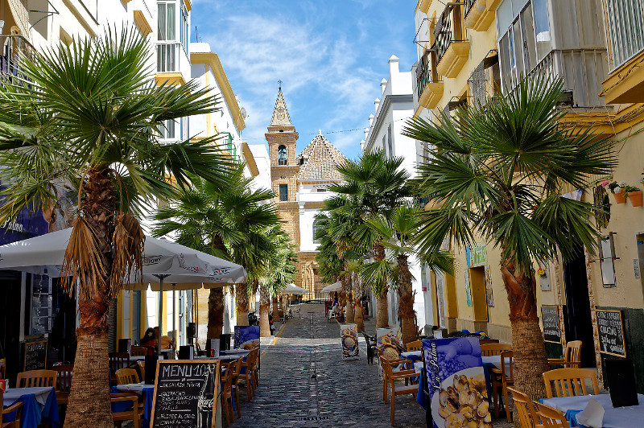
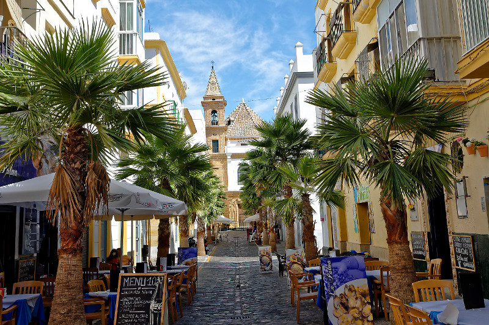

18 de enero
Noticia 1
En el día de hoy, la catedral de Cádiz, se ha abarrotado de gente.
A continuación, se encuentran los lugares que debes visitar si vienes a Cádiz.
Cádiz tiene unos lugares muy característicos que no te puedes perder.
 

En el día de hoy, la catedral de Cádiz, se ha abarrotado de gente.
En el día de hoy, en la plaza de las flores se ha realizado un tablao flamenco.
En el día de hoy, llegaron alumnos de los institutos de Málaga al parque genovés y alimentaron a los patos.